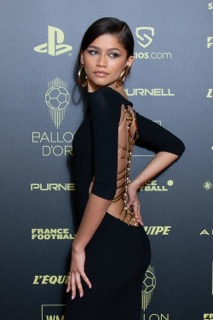
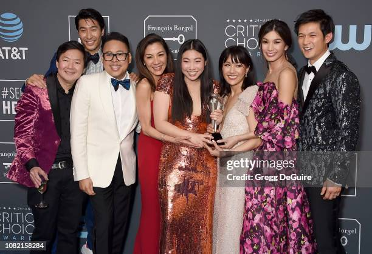
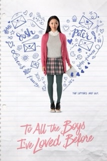

These are a few artists who inspire me
Sabrina Carpenter

Sabrina Carpenter's album "emails I can’t send" deeply resonates with me, particularly the track "decode." In this song she speaks about how she struggles to accept situations that are out of her control. I resonated with this song because of my own struggles with overanalyzing situations that are out of my control and having it take a huge spot in my mind. I found her album very inspiring because of her ability to communicate her emotions in such a beautiful way showcasing her raw vulnerability through her music. Her ability to connect with others on an emotional level through her music is comforting to know how she can articulate her emotions that many find relatable.
Zendaya

Zendaya’s evolution from a Disney actress to a movie star and fashion icon is inspiring. Her red carpet and press tour looks for Challengers showcase elegance and creativity in the way that it reflects her character’s persona. Her Roberto Cavalli black dress with a gold spine is one of my favorites of hers, where she subtly nods to a villian in Spiderman: No Way Home. Zendaya’s fashion sense encourages me to embrace my own unique style while staying true to myself.
Crazy Rich Asians
and To All the Boys I've Loved Before  The films “Crazy Rich Asians” and “To All the Boys I’ve Loved Before” are a comfort and inspiration to me. These films had a pivotal part in my growing up because it wasn’t often that I saw a female Asian American as the lead protagonist in a film. Seeing characters who similarly reflect my own cultural background and experiences allowed me to feel seen and understood. The films brought up a sense of pride and representation that I didn’t realize was missing in the mainstream media while growing up in the United States.